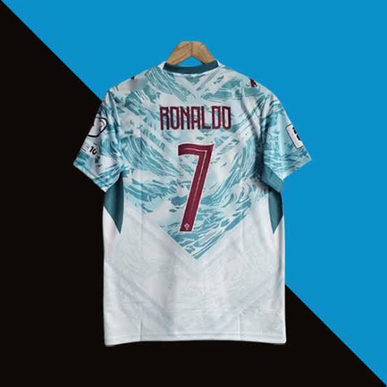

🎬 Featured Video
A cinematic short film that inspires my creative work — embedded with <iframe>.
🎞️ “The art of stillness” — a visual journey through landscapes and light.
✏️ How to edit the pictures:
- Each
<img>has asrcattribute — replace the URL with your own image link. - Update the
alttext to describe your new image (for accessibility & SEO). - You can also adjust
widthandheightattributes (or use CSS classes like.portrait-img/.wide-img). - All images are wrapped in
<figure>with a<figcaption>— feel free to change the captions too.
💡 Current images are from picsum.photos — replace them with your own!